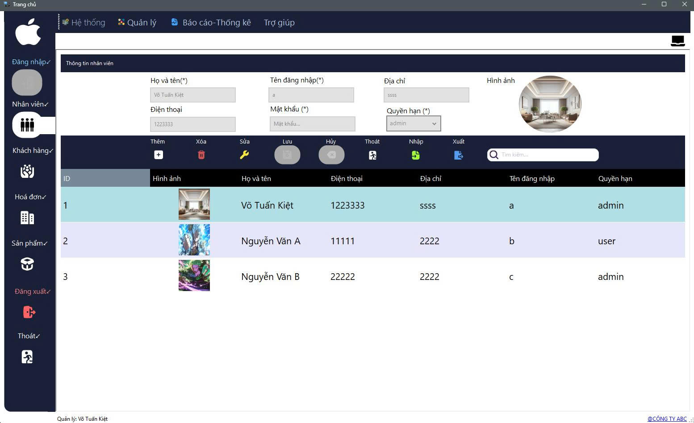

Hướng dẫn sử dụng màn hình Nhân viên.
Quản lý thông tin nhân viên, bao gồm admin và user (nhân viên thường).
Cho phép thêm mới, sửa, xóa nhân viên và phân quyền vai trò để kiểm soát quyền truy cập.
Phần này giúp bạn quản lý danh sách nhân viên làm việc trong cửa hàng, bao gồm tạo tài khoản, sửa thông tin và phân quyền.
Bước 1: Nhấn nút Thêm
Bước 2: Nhập các thông tin cần thiết như tên nhân viên, tài khoản đăng nhập, mật khẩu và vai trò (Admin hoặc Nhân viên).
Bước 3: Nhấn nút Lưu để hoàn tất thêm nhân viên mới.
Bước 1: Chọn nhân viên cần sửa trong danh sách
Bước 2: Nhấn nút Sửa
Bước 3: Cập nhật thông tin cần thay đổi như tên, tài khoản hoặc vai trò
Bước 4: Nhấn nút Lưu để lưu các thay đổi
Bước 1: Chọn nhân viên cần xóa trong danh sách
Bước 2: Nhấn nút Xóa
Bước 3: Xác nhận việc xóa trong hộp thoại hiện ra
Mỗi nhân viên được phân quyền theo vai trò:
Việc phân quyền giúp bảo mật và phân chia trách nhiệm rõ ràng.